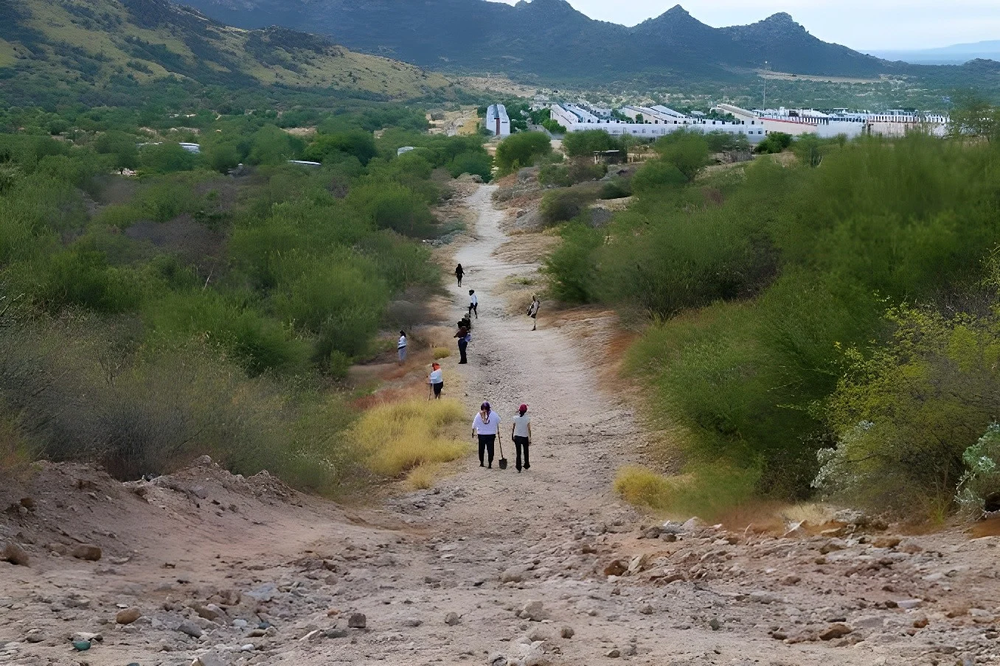

Le 7 octobre 2026, Ceci Flores, fondatrice du collectif Madres Buscadoras de Sonora, et sa fille Milagros de Jesús Valenzuela Flores ont annoncé avoir obtenu la première certification officielle de compétences pour la recherche de personnes disparues au Mexique. Délivrée selon le standard EC1542 du CONOCER, elle valide l'expérience acquise par les familles sur le terrain, dans un pays qui compte plus de 130 000 personnes disparues ou non localisées. Elle relance aussi une question : pourquoi les familles doivent-elles se former pour faire le travail de l'État ?
Le mercredi 7 octobre 2026, Ceci Flores a annoncé sur le réseau X que sa fille Milagros de Jesús Valenzuela Flores et elle avaient obtenu la première certification officielle de compétences pour la recherche de personnes au Mexique. Selon l'annonce, elles sont les premières familles de disparus à y parvenir. Ceci Flores a fondé en 2019 le collectif Madres Buscadoras de Sonora, tandis que sa fille est cofondatrice des Jóvenes Buscadores de Sonora. Selon ses propres chiffres de juillet 2024, le collectif a retrouvé 2 700 corps et réuni 2 400 personnes vivantes avec leurs familles.
L'accréditation correspond au standard de compétence EC1542, « Búsqueda de personas desaparecidas y no localizadas » (« Recherche de personnes disparues et non localisées »), du Conseil national de normalisation et de certification des compétences du travail, le CONOCER, rattaché au ministère de l'Éducation publique. L'évaluation a été conduite par l'entité IECA-CONOCER de l'État de Guanajuato, avec Fernando Ramírez Mendoza, de la société Forensic and Legal, comme évaluateur principal. Les sources ne précisent ni le lieu ni la durée de l'examen.
Le standard couvre l'ensemble du travail de recherche : recueillir des informations sur la personne disparue, établir des fiches, mener des recherches de terrain et à distance, interroger les proches et rédiger des rapports sur les actions menées. Il demande aussi d'identifier les signes qui aident à reconnaître la personne et d'établir les itinéraires ou scénarios où elle pourrait se trouver. Ces savoirs, les mères les ont acquis seules, au fil de leurs recherches.
| Compétence du standard | Contenu |
|---|---|
| Information | Fiches et signes distinctifs |
| Entretiens | Proches et entourage |
| Terrain | Recherches sur place et à distance |
| Analyse | Itinéraires et scénarios possibles |
| Rapports | Compte rendu des actions |
Le fils de Ceci Flores, Alejandro Guadalupe, a été privé de liberté en 2015, à 21 ans, alors qu'il se rendait à son travail à Los Mochis, dans le Sinaloa, et reste introuvable. Un autre fils, Marco Antonio Sauceda Rocha, a disparu en 2019 à Bahía de Kino, dans le Sonora. En mars 2026, un test ADN a confirmé que des restes découverts près de la route 100, à Hermosillo, étaient les siens. Flores figure depuis 2022 sur la liste des 100 femmes de la BBC. Elle a dénoncé des menaces et a été retrouvée vivante après des épisodes de disparition ou d'incommunication en 2023 et en 2024.
Annonce de la première certification officielle de compétences de recherche pour des familles de disparus.
Le gouvernement reconnaît que des défis demeurent en matière de recherche, d'enquête et d'identification.
Un test ADN confirme que des restes retrouvés à Hermosillo sont ceux de Marco Antonio.
Ceci Flores est incluse dans la liste des 100 femmes de la BBC.
Fondation des Madres Buscadoras de Sonora, après la disparition de Marco Antonio.
Disparition d'Alejandro Guadalupe à Los Mochis.
Le Registre national des personnes disparues et non localisées compte plus de 130 000 personnes sans nouvelles depuis 1950, et un rapport de mai 2026 évoque environ 134 000 cas. À cela s'ajoute une crise médico-légale : plus de 72 000 corps n'ont pas été identifiés, entreposés dans des services médico-légaux, des facultés de médecine ou des fosses communes. Rien que dans le Sonora, plus de 5 700 personnes sont portées disparues. Le gouvernement affirme que les homicides ont baissé de plus de 50 % depuis octobre 2024, mais des analystes, comme David Saucedo, jugent que le pays n'est pas plus sûr pour autant.
« No queremos sustituir a las autoridades ni asumir una responsabilidad que corresponde al Estado. »
— Ceci Flores, collectif Madres Buscadoras de Sonora, 7 octobre 2026 (traduction : « Nous ne voulons pas remplacer les autorités ni assumer une responsabilité qui revient à l'État. »)Les Madres Buscadoras de Sonora sillonnent presque chaque week-end le désert près d'Hermosillo, souvent sur la foi d'appels anonymes, avec des tiges métalliques pour détecter l'odeur de la mort. Des soldats de la Garde nationale escortent les groupes, mais le danger reste réel : selon Artículo 19 et Infobae, six personnes chercheuses, dont cinq femmes, avaient été assassinées au Mexique à la fin de juin 2026, quatre d'entre elles au Guanajuato. Amnesty International a recensé au moins 39 familiers chercheurs tués depuis 2010.
La Commission nationale de recherche rappelle que les autorités doivent agir dès qu'elles apprennent une disparition : recueillir des informations, activer des alertes, déployer des équipes. Le système officiel réunit la Commission nationale, les commissions locales, les parquets et les forces de sécurité. La présidente Claudia Sheinbaum a proposé en mars 2025 une Plateforme unique d'identité, fondée sur un CURP muni de photo et d'empreintes, pour croiser les registres. Elle a en revanche rejeté la procédure de l'article 34 ouverte par le Comité de l'ONU contre les disparitions forcées : « Ce n'est pas une disparition forcée perpétrée depuis l'État », a-t-elle déclaré.
| Indicateur | Chiffre |
|---|---|
| Personnes non localisées | > 130 000 |
| Corps non identifiés | > 72 000 |
| Disparus dans le Sonora | > 5 700 |
| Chercheurs tués depuis 2010 | ≥ 39 |
Pour Flores, le document est « bien plus qu'un papier » : un commencement, pour que d'autres familles se forment. Elle espère que « demain, ce seront des dizaines, des centaines et des milliers de familles chercheuses formées et certifiées dans tout le Mexique ». La presse mexicaine s'interroge néanmoins : les mères « professionnalisent une tâche que l'État est tenu d'accomplir », écrit ADN40. Les familles ont-elles à se préparer pour chercher leurs proches, tandis qu'elles attendent des réponses ?
La certification a une valeur concrète : elle donne un cadre reconnu aux méthodes que les familles ont inventées et peut ouvrir la voie à une coopération plus formelle avec les commissions de recherche. Elle ne fait pas pour autant des mères des agents de l'État, et Ceci Flores le répète : le collectif n'entend ni suppléer les autorités ni les en dispenser.
Mais le symbole est ambigu. Quand des familles doivent obtenir un titre pour chercher leurs disparus, c'est que la recherche s'est déplacée de l'institution vers ceux qui souffrent le plus. Reconnaître leur savoir-faire est juste ; confondre cette reconnaissance avec une répartition des rôles serait un renoncement.
El 7 de octubre de 2026, Ceci Flores, fundadora del colectivo Madres Buscadoras de Sonora, y su hija Milagros de Jesús Valenzuela Flores anunciaron que obtuvieron la primera certificación oficial de competencias para la búsqueda de personas desaparecidas en México. Expedida conforme al estándar EC1542 del CONOCER, valida la experiencia adquirida por las familias en el campo, en un país con más de 130 000 personas desaparecidas o no localizadas. También plantea una pregunta: ¿por qué las familias deben capacitarse para hacer el trabajo del Estado?
El miércoles 7 de octubre de 2026, Ceci Flores anunció en la red X que su hija Milagros de Jesús Valenzuela Flores y ella obtuvieron la primera certificación oficial de competencias para la búsqueda de personas en México. Según el anuncio, son las primeras familiares de desaparecidos en lograrlo. Ceci Flores fundó en 2019 el colectivo Madres Buscadoras de Sonora, mientras que su hija es cofundadora de Jóvenes Buscadores de Sonora. Según sus propias cifras de julio de 2024, el colectivo ha recuperado 2 700 cuerpos y reencontrado a 2 400 personas con vida con sus familias.
La acreditación corresponde al Estándar de Competencia EC1542, «Búsqueda de personas desaparecidas y no localizadas», del Consejo Nacional de Normalización y Certificación de Competencias Laborales (CONOCER), adscrito a la Secretaría de Educación Pública. La evaluación estuvo a cargo de la entidad IECA-CONOCER del Estado de Guanajuato, con Fernando Ramírez Mendoza, de la empresa Forensic and Legal, como líder evaluador. Las fuentes no precisan ni el lugar ni la duración del examen.
El estándar abarca todo el trabajo de búsqueda: recabar información sobre la persona desaparecida, elaborar fichas, realizar búsquedas de campo y remotas, entrevistar a familiares y personas cercanas y redactar informes sobre las acciones realizadas. También exige identificar los rasgos que ayudan a reconocer a la persona y establecer las rutas o escenarios donde podría encontrarse. Esos saberes, las madres los adquirieron solas, a lo largo de sus búsquedas.
| Competencia del estándar | Contenido |
|---|---|
| Información | Fichas y rasgos distintivos |
| Entrevistas | Familiares y entorno |
| Campo | Búsquedas en sitio y remotas |
| Análisis | Rutas y escenarios posibles |
| Informes | Registro de las acciones |
El hijo de Ceci Flores, Alejandro Guadalupe, fue privado de la libertad en 2015, a los 21 años, cuando iba a su trabajo en Los Mochis, Sinaloa, y sigue sin localizarse. Otro hijo, Marco Antonio Sauceda Rocha, desapareció en 2019 en Bahía de Kino, Sonora. En marzo de 2026, una prueba de ADN confirmó que unos restos hallados cerca de la Carretera 100, en Hermosillo, eran los suyos. Flores integra desde 2022 la lista de las 100 mujeres de la BBC. Ha denunciado amenazas y fue localizada con vida tras episodios de desaparición o incomunicación en 2023 y 2024.
Anuncio de la primera certificación oficial de competencias de búsqueda para familiares de desaparecidos.
El gobierno reconoce que persisten retos en búsqueda, investigación e identificación.
Una prueba de ADN confirma que unos restos hallados en Hermosillo son los de Marco Antonio.
Ceci Flores es incluida en la lista de las 100 mujeres de la BBC.
Fundación de Madres Buscadoras de Sonora, tras la desaparición de Marco Antonio.
Desaparición de Alejandro Guadalupe en Los Mochis.
El Registro Nacional de Personas Desaparecidas y No Localizadas contabiliza a más de 130 000 personas sin localizar desde 1950, y un informe de mayo de 2026 habla de unos 134 000 casos. A ello se suma una crisis forense: más de 72 000 cuerpos siguen sin identificar, en servicios forenses, facultades de medicina o fosas comunes. Solo en Sonora hay más de 5 700 personas desaparecidas. El gobierno afirma que los homicidios han bajado más de 50 % desde octubre de 2024, pero analistas como David Saucedo consideran que el país no es más seguro por ello.
«No queremos sustituir a las autoridades ni asumir una responsabilidad que corresponde al Estado.»
— Ceci Flores, colectivo Madres Buscadoras de Sonora, 7 de octubre de 2026Las Madres Buscadoras de Sonora recorren casi cada fin de semana el desierto cercano a Hermosillo, a menudo tras denuncias anónimas, con varillas metálicas para detectar el olor de la muerte. Elementos de la Guardia Nacional escoltan a los grupos, pero el peligro es real: según Artículo 19 e Infobae, seis personas buscadoras, cinco de ellas mujeres, habían sido asesinadas en México a finales de junio de 2026, cuatro en Guanajuato. Amnistía Internacional ha documentado al menos 39 familiares buscadores asesinados desde 2010.
La Comisión Nacional de Búsqueda recuerda que las autoridades deben actuar desde que tienen noticia de una desaparición: recabar información, activar alertas y desplegar personal. El sistema oficial reúne a la Comisión Nacional, las comisiones locales, las fiscalías y los cuerpos de seguridad. La presidenta Claudia Sheinbaum propuso en marzo de 2025 una Plataforma Única de Identidad, basada en una CURP con fotografía y huellas dactilares, para cruzar los registros. En cambio, rechazó el procedimiento del artículo 34 abierto por el Comité de la ONU contra la Desaparición Forzada: «No es desaparición forzada perpetrada desde el Estado», declaró.
| Indicador | Cifra |
|---|---|
| Personas no localizadas | > 130 000 |
| Cuerpos sin identificar | > 72 000 |
| Desaparecidos en Sonora | > 5 700 |
| Buscadores asesinados desde 2010 | ≥ 39 |
Para Flores, el documento es «mucho más que recibir un documento»: un comienzo para que más familias se capaciten. Espera que «mañana sean decenas, cientos y miles de familias buscadoras capacitadas y certificadas en todo México». La prensa mexicana se pregunta, sin embargo, si las madres están «profesionalizando una labor que el Estado está obligado a realizar», como escribe ADN40: ¿por qué las familias deben prepararse para buscar a sus desaparecidos mientras siguen esperando respuestas?
La certificación tiene un valor concreto: da un marco reconocido a los métodos que las familias inventaron y puede abrir la puerta a una cooperación más formal con las comisiones de búsqueda. Pero no convierte a las madres en agentes del Estado, y Ceci Flores lo repite: el colectivo no pretende suplir a las autoridades ni eximirlas.
El símbolo, sin embargo, es ambiguo. Cuando las familias necesitan un título para buscar a sus desaparecidos, la búsqueda se ha desplazado de la institución hacia quienes más sufren. Reconocer su saber hacer es justo; confundir ese reconocimiento con un reparto de funciones sería una renuncia.